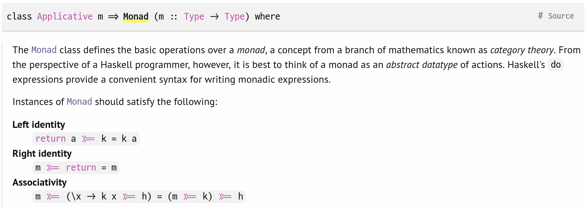

What the Monad?
So, maybe1 you've heard of the scary Monad. Maybe you've even heard of the language Haskell. And maybe, just maybe, you've tried to uncover what the heck a Monad actually is and does.
Chances are, if you tried digging around, you stumbled upon one of the following things:
A monad is just a monoid in the category of endofunctors.

I'm sorry, what? That was my initial reaction when I saw this, and if it was yours too, that's okay. The "official" definitions of the Monad are very abstract and didn't mean much to me at first. However, underneath these very technical terms stemming from Category theory is a concept that allows us to represent something we use all the time when writing code: failure propagation. To better explain what I mean by this, let's look at a few examples in a language you might already know: Rust.
Let's imagine that you have a function that gives you the answer to
Life, the Universe, and Everything. We obviously know what it is, but
for the sake of demonstration, let's imagine that this function can
fail. In Rust, you can represent this posibility with one of two types:
an Option<T>,
or a Result<T, E>.
Here, T (T for "Type") is the "successful" variant,
and E (E for "Error") is the "error" variant. In short,
Option can represent the presence or absence of a value,
while a Result can represent success and failure. In shorter
words, Result can hold an error while an Option
cannot.
The Option<T> type is just a little simpler, so that's
what we'll focus on for now. As I've already mentioned, it can represent
failure. It does this by having two variants: Some(T), and
None. In action, it looks like this:
fn fallible() -> Option<usize> {
// ... some logic ...
// somewhere in this logic, the code can `return None;`
// ... more logic ...
Some(42)
}If we want to use the result of this function, we have a few options (pun kind of intended):
let res = fallible();
// 1. Pattern matching
match res {
Some(answer) => todo!("do something"),
None => panic!("drat!")
}
// 2. Pattern matching, again
if let Some(answer) = res {
todo!("do something");
} else {
panic!("drat!");
}
// You can obviously also just `unwrap()` the result, making
// the program crash if the value is `None`...This is probably fine if you're just doing one or two of these operations, feeding the result of the first as the input into the second, returning the result of the second operation. But surely this gets unwieldy very fast.
fn op2(input: usize) -> Option<String> { /* ... */ }
fn op3(input: String) -> Option<User> { /* ... */ }
fn my_compound_op() -> Option<User> {
match fallible() {
Some(answer) => match op2(answer) {
Some(str) => op3(str)
None => None
},
None => None
}
}Wow, three levels deep and we've already got a nice tower. We obviously see a repetition here: when chaining two fallible operations together, we first check if the first failed, and only if it hasn't failed, we attempt the second, otherwise returning the result of the first. Oh how wonderful it would be if only there was a pattern to abstract this repetitive logic away!
...I think you understand what I mean. The monad allows us to do precisely
this. Option<T>, implements a monadic interface,
therefore the type provides a method called .and_then(). On
an Option<T>, it takes a callback of type fn(T)
-> Option<T>2. This
means that the code above becomes:
my_compound_op() -> Option<User> {
fallible()
.and_then(op2)
.and_then(op3)
}
So now you know what the Monad is and how it might be practical for
you. Obviously, Option<T> isn't the only thing that
implements a monadic interface. Result<T>
implements it as well. You can of course implement your own monadic types.
Going deeper
I might've lied to you just a little in the previous section; the Monad
isn't useful just for propagating failure. It encapsulates the general
notion of chaining computations. The operator that facilitates this
chaining is called (>>=), "bind" (because it binds a
function to the result of a previous computation), or, as we saw in Rust,
"and then". In pseudo-Rust, the type of the operator is this:
fn and_then<M, U, F>(self: M, f: F) -> M<U>
where
F: FnOnce(T) -> M<U>,As you can see, there is no mention of some sort of failure. It is a generalization of performing the following steps:
-
Evaluate the monadic state
-
In the case of
Option<T>, "Am INone? If I am, the result isNonetoo!")
-
In the case of
- Pass the inner value of the monad to the callback
-
Transform the result
-
In the case of
Option<T>, this step is a no-op.
-
In the case of
- Return the result
The bold steps are what you're actually defining in a custom
.and_then() definition. The interesting thing is, this
doesn't have to relate to error handling at all! To illustrate what
I mean, let's try to write a Writer monad. I'm under the
impression that a Reader monad is simpler to understand,
but that wasn't the case for me at all, and so I'm instead using a
Writer, which seems absolutely primitive to me in comparison.
A Writer is a Monad that encapsulates a value and some state
that can be written to. You could for example have a series of functions
that transform a number and also emit log entries for their modifications.
Suppose that we're writing this in a library context and so we don't
access standard output/error directly, only appending the logs to a vector
of strings:
fn square(input: usize, log: &mut Vec<String>) -> usize {
let res = input * input;
log.push("squared".to_owned());
res
}
fn divide(input: usize, log: &mut Vec<String>) -> usize {
let res = input / 3;
log.push("divided".to_owned());
res
}
fn increment(input: usize, log: &mut Vec<String>) -> usize {
let res = input + 1;
log.push("incremented".to_owned());
res
}
// usage
fn computation() {
let x = 0;
let mut logs = Vec::new();
let res = divide(square(increment(increment(x, &mut logs), &mut logs), &mut logs), &mut logs);
_ = res;
}Each and every function has to take in a mutable reference to a vector as an argument, and then has to handle pushing to it. This is duplicated logic. Also, as you can see, these functions don't compose well. We can do better. As I already mentioned, the Monad is a pattern that allows us to chain computations and extract duplicated logic. The duplicated logic here is the pushing to the vector of logs. Eliminating this dependency also allows us to eliminate the argument holding the mutable reference to the vector completely.
The role of the vector of logs is to hold some mutable state that can be written to by the functions. They don't need to read it, only append to it3.
We can instead define a Writer struct that will
hold this state for us. It doesn't even have to be mutable; the
.and_then() operator will handle transfer of ownership for
us. The definition will look something like this:
struct Writer {
val: usize,
logs: Vec<String>
}
Now we need to define the .and_then() method:
impl Writer {
// don't worry too much about the type of `f` here
fn and_then(mut self, f: impl FnOnce(usize) -> Writer) -> Writer {
let mut res = f(self.val);
self.logs.append(&mut res.logs); // combine the two histories
Writer {
val: res.val,
logs: self.logs
}
}
}At this point, we can rewrite our transformation functions and our usage of them like this:
fn square(input: usize) -> Writer {
Writer {
val: input * input,
logs: vec!["squared".to_owned()]
}
}
fn divide(input: usize) -> Writer {
Writer {
val: input / 3,
logs: vec!["divided".to_owned()]
}
}
fn increment(input: usize) -> Writer {
Writer {
val: input + 1,
logs: vec!["incremented".to_owned()]
}
}
// usage
fn computation() {
let x = Writer {
val: 0,
logs: vec![],
};
let res = x
.and_then(increment)
.and_then(increment)
.and_then(square)
.and_then(divide);
_ = res;
}
Let's see how our and_then() definition fits into the list of
steps I outlined above:
-
Evaluate the monadic state
- Our definition doesn't actually need to do anything here
- Pass the inner value of the monad to the callback
-
Transform the result
-
Our definition takes the returned
WriterMonad and combines it with theWriterMonad from the previous result. This is the main point of theWriter.
-
Our definition takes the returned
- Return the result
There's no doubt there's room for improvement here. You could add
a Writer::new associated function for instantiating
a Writer with an empty log4, you could add more methods to your
Writer, etc., but these are beyond the scope of this article.
1: The usage of Maybe is very much
intentional. Maybe is pretty much analogous to Rust's
Option<T> type in Haskell. You can find its documentation
here. ↩
2: Actually, the callback type is a little more complicated...
What I wrote in the text above is the type of a function pointer,
but the actual callback type is a trait object that implements the
FnOnce trait. You can see the
definition of the method
here. This allows for more flexible inputs; the callback can be an
fn pointer, but also a closure. I highly recommend you to
read up on the FnOnce trait and the Fn traits
in general if you want to know more about how this stuff works; it is very
interesting reading. ↩
3: In this case, we know that the writable state is a Vec, so
it can be appended to. But the operation of combining new state with old
state, or rather combining two values, can be abstracted away as well.
Congratulations, you've just found out what a
Monoid is for! ↩
4: And in fact, you probably should! The Writer we've built
here doesn't actually satisfy the mathematical definition of a Monad: it's
lacking a function to lift something into the Monad. In Haskell,
this function is (admittedly, a little confusingly) dubbed
return. ↩